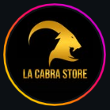

Objetivo
Convertir procesos dispersos en una operación central, trazable y fácil de entender.
Nexus nace de una idea simple: la operación diaria no debería depender de información fragmentada, tareas repetidas o herramientas que no se hablan entre sí.
Convertir procesos dispersos en una operación central, trazable y fácil de entender.
Construir una plataforma empresarial latinoamericana capaz de crecer con negocios locales y operaciones internacionales.
La tecnología debe dar continuidad, control y claridad antes que complejidad.
Escuchar la operación real, construir, probar, medir y mejorar sin romper lo que ya funciona.
La historia de Nexus se cuenta mejor desde el problema que intenta resolver: negocios donde vender, cobrar, revisar stock, controlar deudas, comprar y reportar ocurre en herramientas separadas. Oliver Lugo impulsa Nexus Enterprise como una plataforma que une esos flujos y evoluciona junto con las necesidades de cada implementación.
La narrativa evita inventar títulos, años o hitos no documentados. Cuando quieras, podemos completar esta sección con fechas, formación, primeras versiones, equipo y momentos clave verificados.
Entender cómo una empresa vende, controla, corrige y toma decisiones antes de diseñar el software.
Conectar ventas, inventario, caja, clientes, proveedores y análisis en un mismo producto.
Evolucionar hacia multi-PC, catálogo cloud, integraciones y una plataforma preparada para otros mercados.
La expansión internacional empieza con fundamentos que viajan bien: una interfaz clara, múltiples monedas, arquitectura modular, configuración por empresa y canales digitales conectables.
Los logos de Daca Sport, Novaro y Rican2 Sport son representaciones provisionales creadas para este prototipo. Reemplázalos por los archivos oficiales antes de publicar.

Cuéntanos tu operación actual y te mostramos qué módulos, arquitectura y plan tienen sentido.
Hablar con Nexus